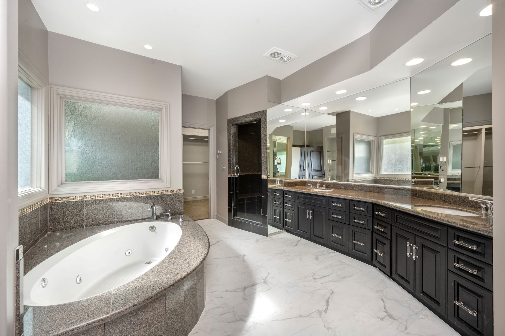
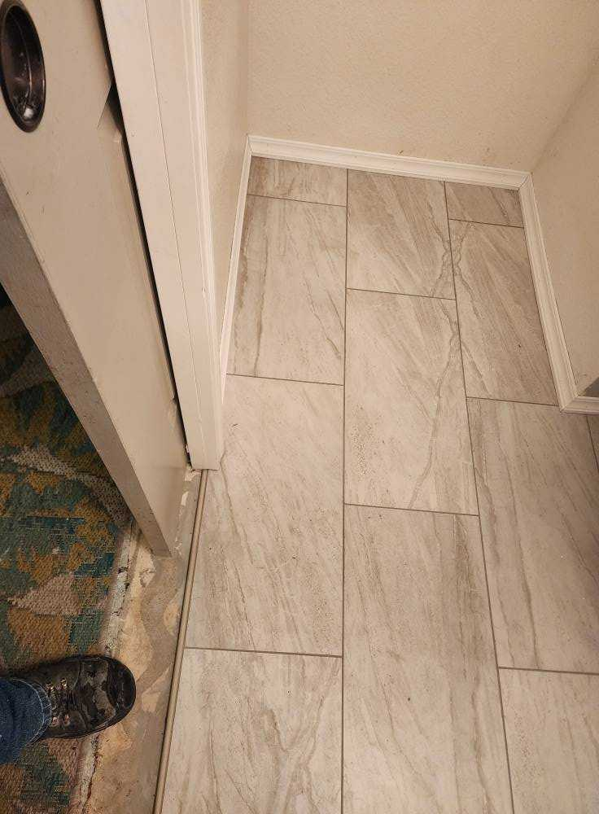
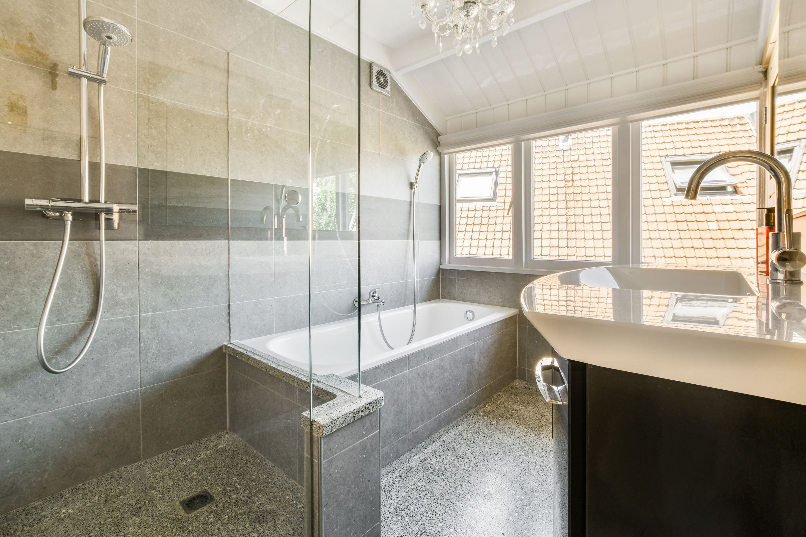
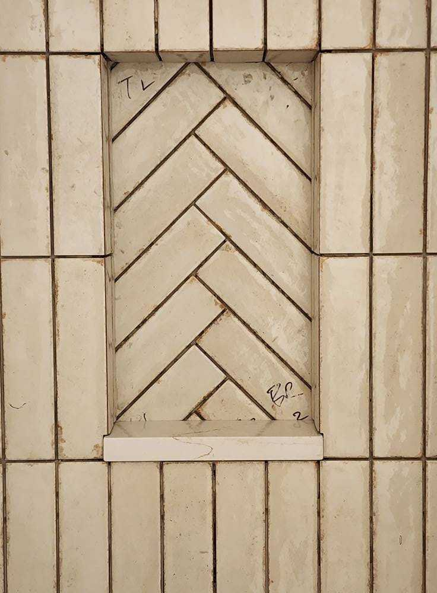

Bathroom remodels for Hayden homes — from busy family bathrooms to spa-quality master suites in lakefront properties.
Hayden bathrooms cover a lot of ground. Lakefront homes near Hayden Lake often have heavily used family bathrooms that need to handle a steady stream of wet feet from boat days and beach trips. Suburban homes off Government Way deal with the same morning rush as anywhere else — but with finishes that have aged out of style. Whichever side of Hayden your home is on, the bathroom is usually next on the upgrade list.
DCB Construction LLC builds bathrooms for Hayden families that handle real life. Tile floors that survive constant moisture. Walk-in showers with proper waterproofing that lasts. Vanities with storage you'll actually use. Lighting that works for both makeup and middle-of-the-night runs to the bathroom. Practical, durable, and visually right for your home.
Recent bathroom projects in the Hayden and Hayden Lake area.




Hayden's housing mix — from lakefront cabins to suburban family homes — means bathroom needs vary widely. Lake homes often need bathrooms that handle wet swimsuits and sandy feet without falling apart. Suburban homes near Avondale and Honeysuckle Beach typically need updates to bathrooms that haven't been touched since the original build in the 90s or 2000s. Each project gets a plan tailored to how the bathroom is actually used.
We work with homeowners across Hayden including lakefront properties, the Avondale area, and homes off Government Way and Strahorn Road. Whatever your bathroom needs, we approach it with the same thorough waterproofing and tile work that's the foundation of every project.
Looking for a different remodel? See our other Hayden services: kitchen remodeling in Hayden, or visit our Hayden area page for the full picture.
Most Hayden bathroom remodels run $15,000 to $40,000. Lake-area homes with high-end finishes can run higher, especially when full master suite gut renovations are involved. We provide a free, detailed estimate before any work begins.
Yes — we have experience with lakefront and lake-adjacent properties around Hayden Lake. Lake homes often need bathrooms that handle higher humidity and constant wet use. We use tile and waterproofing systems built for those conditions, and we plan around any unique layouts these homes tend to have.
Absolutely. Curbless walk-in showers, grab bars integrated into the tile design, comfort-height toilets, and non-slip flooring are all common upgrades we install for Hayden homeowners planning ahead for aging in place. Accessibility doesn't have to mean institutional — we design these features so they look natural in the bathroom.
Most Hayden bathroom remodels take 2 to 5 weeks depending on scope. A simpler refresh runs about 2 weeks. A full gut renovation with new tile, walk-in shower, and plumbing relocation typically takes 4 to 5 weeks. We give you a clear timeline up front and update you as the project progresses.